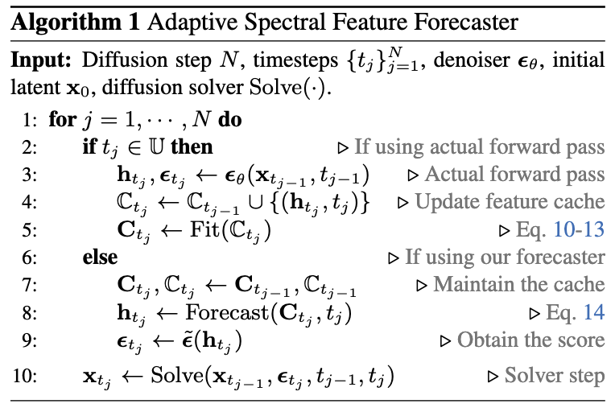
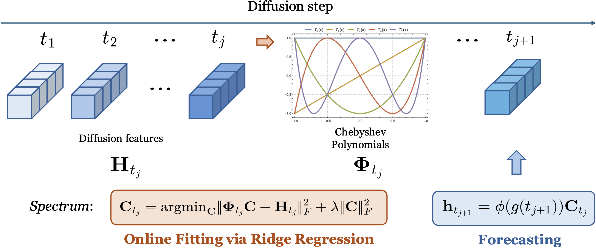
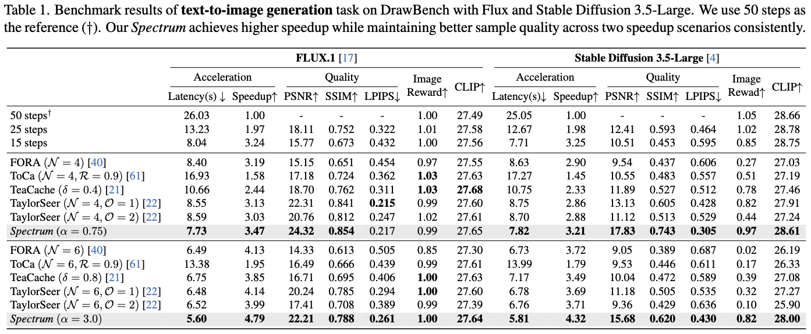
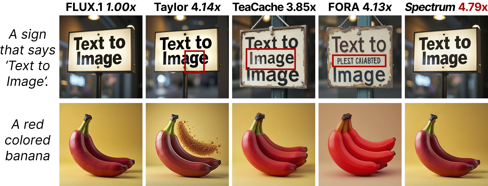
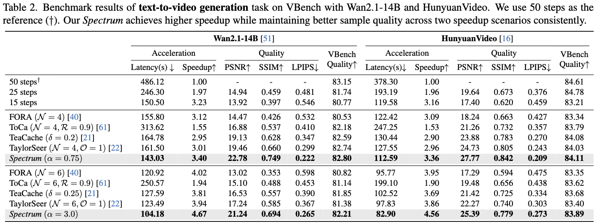

Diffusion models have become the dominant tool for high-fidelity image and video generation, yet are critically bottlenecked by their inference speed due to the numerous iterative passes of Diffusion Transformers. To reduce the exhaustive compute, recent works resort to the feature caching and reusing scheme that skips network evaluations at selected diffusion steps by using cached features in previous steps. However, their preliminary design solely relies on local approximation, causing errors to grow rapidly with large skips and leading to degraded sample quality at high speedups.
In this work, we propose spectral diffusion feature forecaster (Spectrum), a training-free approach that enables global, long-range feature reuse with tightly controlled error. In particular, we view the latent features of the denoiser as functions over time and approximate them with Chebyshev polynomials. Specifically, we fit the coefficient for each basis via ridge regression, which is then leveraged to forecast features at multiple future diffusion steps. We theoretically reveal that our approach admits more favorable long-horizon behavior and yields an error bound that does not compound with the step size.
Extensive experiments on various state-of-the-art image and video diffusion models consistently verify the superiority of our approach. Notably, we achieve up to 4.79x speedup on FLUX.1 and 4.67x speedup on Wan2.1-14B, while maintaining much higher sample quality.
Diffusion feature forecaster. Feature caching-based approaches have stood out and shown great promise in remarkably reducing the sampling time while maintaining desirable sample quality, all without additional training. Concretely, these methods cache latent features produced by certain blocks at selected timesteps and use them to synthesize features at future timesteps via light-weight predictors, thereby avoiding expensive denoiser evaluations. In particular, the naïve copy strategy directly reuses the most recent cached feature, while the recent work performs discrete Taylor expansion using a few nearest cached points. We summarize the algorithmic flow in the figure.




Spectrum consistently achieves higher speedup while maintaining much better sample quality compared with all baselines, demonstrating the efficacy of our spectral feature forecaster.

Our Spectrum achieves the best performance with even fewer steps, demonstrating superior sample quality and better temporal consistency. In contrast, TaylorSeer exhibits unnatural color shifts and temporal jittering, which are likely caused by the compounding errors from local approximation.
@article{han2026adaptive,
title={Adaptive Spectral Feature Forecasting for Diffusion Sampling Acceleration},
author={Han, Jiaqi and Shi, Juntong and Li, Puheng and Ye, Haotian and Guo, Qiushan and Ermon, Stefano},
journal={arXiv preprint arXiv:2603.01623},
year={2026}
}